Перевод:https://retooling.io/blog/an-unexpected-journey-into-microsoft-defenders-signature-world
Microsoft Defender — это решение для обеспечения безопасности конечных точек, предустановленное на каждом компьютере с Windows начиная с Windows 7.
Это довольно сложное программное обеспечение, охватывающее как EDR, так и EPP сценарии использования.
В этом контексте Microsoft предлагает два различных продукта:
Microsoft Defender для конечных точек — это облачное решение для безопасности конечных точек, которое сочетает возможности детектов с преимуществами обработки в облаке.
С другой стороны, Microsoft Defender Antivirus (MDA) — это современное EPP (Платформа защиты конечных точек)., включенное по умолчанию на любой новой установке Windows.
MDA является объектом данного анализа.
Рисунок 1.
Продукт MDA состоит из модулей, работающих как в режиме ядра, так и в пользовательском режиме. Обзор показан на рисунке 1.
Первым загружаемым компонентом является WdBoot.sys. Это драйвер ELAM, который проверяет целостность системы на ранних этапах загрузки системы.
Он загружается раньше любых других сторонних драйверов и сканирует каждый загруженный образ драйвера до вызова его DriverEntry.
Для обнаружения он использует свой собственный набор сигнатур, которые хранятся в специальном реестровом ключе (HKLM\ELAM\Microsoft Antimalware Platform\Measured), к которому нельзя получить доступ даже после выгрузки драйвера ELAM.
Основная задача службы антивируса Microsoft Defender — запустить основной исполняемый файл MDA, а именно MsMpEng.exe.
Этот процесс выполняется с защитой EPROCESS.Protection, равной AntimalwareLight (0x31), благодаря сертификации WdBoot.
MsMpEng — это относительно небольшой исполняемый файл (~300К), который загружает следующие более крупные компоненты, реализующие большую часть логики:
MpClient — это вспомогательная библиотека, реализующая ряд запросов RPC для службы (для получения конфигурации или запроса сканирования).
Наконец, есть WdFilter.sys, основной компонент архитектуры MDA в пространстве ядра. Он контролирует доступ к файловой системе, регистрируясь как драйвер минифильтра, регистрирует процедуры уведомления (загрузка образов, создание процесса, доступ к объектам и т. д.).
База данных сигнатур:
Сигнатуры MDA распределяются в четырех различных файлах .vdm:
Рисунок 2
Файлы mpavbase.vdm и mpasbase.vdm являются исполняемыми файлами Portable Executable, содержащими ресурс с сжатыми сигнатурами внутри. Такой ресурс имеет глобальный заголовок, который начинается со специального значения RMDX.
На Рисунке 2 представлен глобальный заголовок. Поле uint32 с отступом 0x18 от начала ресурса содержит относительный сдвиг (0x130 на рисунке), который указывает на начало полезной нагрузки. Действительно, после 8 байт от этой точки начинается буфер сжатых данных.
На сдвиге 0x40 глобальный заголовок содержит массив DWORD. Каждый DWORD разделен на две части: старший байт (в желтом) представляет тип сигнатуры, в то время как оставшиеся три байта (в фиолетовом) представляют количество сигнатур данного типа в обратном порядке байтов.
Полезная нагрузка, начинающаяся с сдвига 0x138, сжата с использованием алгоритма gzip и может быть извлечена с помощью следующего кода на Python.
Анализ движка
Основная логика MDA расположена в MpEngine.dll. Движок загружается с помощью MpSvc.dll в функции MpSvc!LoadEngine, которая вызывает MpSvc!InitEngineContext.
Здесь MpEngine.dll загружается через KernelBase!LoadLibraryExW, и извлекается адрес одной из основных функций, которая позволяет службе завершить инициализацию движка: экспорт mpengine!__rsignal.
В общих чертах, функция rsignal по сути является оберткой функции mpengine!DispatchSignalOnHandle, которая вызывает функцию, соответствующую входному параметру signal_id.
Вот прототип функции:
UINT64 DispatchSignalOnHandle( PVOID g_hSignalptr, UINT64 signal_id, BYTE *pParams, SIZE_T cbParams )
Для инициализации MpEngine, MpSvc!InitEngineContext вызывает функцию rsignal следующим образом:
(pMpengineCtx->pfn__rsignal)( &pMpengineCtx->hMpEngineInstance, 0x4036, pParam, 0x1B8 );
Где параметры описаны ниже:
pMpengineCtx->hMpEngineInstance: это выходной параметр, который получает дескриптор инициализированного движка.
0x4036 — это signal_id для запроса инициализации.
pParams указывает на параметры инициализации.
cbParams — это размер pParams в байтах.
Функция MpEngine, соответствующая сигналу 0x4036, это StartMpEngine. Эта функция рекурсивно вызывает DispatchSignalOnHandle со следующими соответствующими signal_id:
0x4019: инициирует выполнение InitializeMpEngine, которая отвечает за инициализацию основной структуры данных под названием gktab.
Gktab огромен (0x15bb0 байт!) и содержит десятки полей, однако первое (и, возможно, одно из самых важных) — это указатель на функцию ksignal, которая реализует большинство функциональностей, связанных с signal_id (более 50).
0x401a: вызывает функцию ksignal и функцию dispatch для управления исключениями защитника.
0x400b: вызывает функцию ksignal для вызова функции modprobe_init, где происходит инициализация модулей.
Инициализация модулей MpEngine
MpEngine содержит множество модулей (названных AutoInitModules). Некоторые из них используются для поддержки определенных форматов файлов, таких как PE, ELF, Mach-O, и реализуют специализированные сканеры (которые регистрируются во время инициализации через функцию ScanRegister), а другие реализуют вспомогательные функции, такие как загрузчики сигнатур.
Такие модули ссылкаются на глобальный массив g_pUniModEntries. Каждая запись — это структура типа unimod_entry_t:
struct unimod_entry_t { PCHAR pModuleName; PVOID pfnInit; PVOID pfnCleanup; __int64 Unk; };
Где pModuleName — это читаемое человеком имя модуля, pfnInit — указатель на функцию инициализации, а pfnCleanup указывает на функцию очистки. Последнее поле обычно равно 0 или 1, но мы особо не обращали на это внимание.
Как описано ранее, MpSvc!InitEngineContext вызывает функцию __rsignal с несколькими signal_id, один из которых инициирует выполнение функции modprobe_init, которая будет описана в оставшейся части этого раздела.
Функция modprobe_init работает в трех основных фазах:
1)Предзагрузка баз данных сигнатур:
Эта фаза включает разбор основного заголовка и инициализацию необходимых структур данных.
Это достигается вызовом функции mpengine!preload_database.
2)Выполнение функций инициализации:
Вызываются функции инициализации всех AutoInitModules.
Это делается путем перебора всех записей в unimod_entry_t массива g_pUniModEntries и вызова функции pfnInit для каждой записи.
3)Завершение процесса загрузки сигнатур:
Заключительная фаза включает завершение процесса загрузки сигнатур.
Это делается путем вызова функции mpengine!load_database.
Подробное описание всех модулей потребовало бы огромного количества работы. Таким образом, для наших целей мы сосредоточимся только на двух из них: cksig и pefile.
Модуль cksig
Модуль cksig относится к загрузчикам сигнатур и инициализируется в рамках mpengine!cksig_init_module. На этом этапе процесса инициализации база данных ещё не загружена. Поскольку семантика каждой сигнатуры отличается от других, движок имеет отдельный загрузчик для каждого типа сигнатур. Назначенная функция считывает тело сигнатуры и загружает его в память. Модуль, желающий обработать определенный формат сигнатуры, должен зарегистрировать обратный вызов в движке.
Для поддержки этого процесса, если модуль хочет обработать определенный формат сигнатуры, он должен зарегистрировать обратный вызов в движке. Позже, когда процесс загрузки сигнатур будет завершен (Фаза 3), обратный вызов будет вызван для каждой записи, загруженной из файла VDM.
На сколько нам известно, существует две функции для регистрации обратного вызова: mpengine!RegisterForDatabaseRecords и mpengine!regcntl. Функция mpengine!RegisterForDatabaseRecords принимает на вход адрес глобальной переменной, которая получает дескриптор типа сигнатуры и обратный вызов загрузчика.
Функция regcntl принимает на вход объект hstr_handler, определенный следующим образом:
где pfn_push — это указатель функции на обработчик сигнатуры типа hstr_type. pHstrSigs и pHstrSigs2 указывают на записи сигнатур для текущего hstr_type. pfn_pushend и pfn_unload — это две другие функции, часть обработки сигнатур, которые не охватываются этим постом.
Модуль cksig использует как RegisterForDatabaseRecords, так и regcntl для регистрации двух разных групп сигнатур. Мы сосредоточимся на последнем, поскольку он ориентирован на сигнатуры HSTR. Инициализация второй группы выполняется в подпрограмме pattsearch_init (вызываемой cksig_init_module), которая устанавливает обратные вызовы для конкретной семьи сигнатур под названием HSTR.
К этой семье относятся следующие типы сигнатур:
ID ТИП СИГНАТУРЫ
97 SIGNATURE_TYPE_PEHSTR
120 SIGNATURE_TYPE_PEHSTR_EXT
133 SIGNATURE_TYPE_PEHSTR_EXT2
140 SIGNATURE_TYPE_ELFHSTR_EXT
141 SIGNATURE_TYPE_MACHOHSTR_EXT
142 SIGNATURE_TYPE_DOSHSTR_EXT
143 SIGNATURE_TYPE_MACROHSTR_EXT
190 SIGNATURE_TYPE_DEXHSTR_EXT
191 SIGNATURE_TYPE_JAVAHSTR_EXT
197 SIGNATURE_TYPE_ARHSTR_EXT
209 SIGNATURE_TYPE_SWFHSTR_EXT
211 SIGNATURE_TYPE_AUTOITHSTR_EXT
212 SIGNATURE_TYPE_INNOHSTR_EXT
215 SIGNATURE_TYPE_CMDHSTR_EXT
228 SIGNATURE_TYPE_MDBHSTR_EXT
234 SIGNATURE_TYPE_DMGHSTR_EXT
Для установки этой новой группы обработчиков для семьи сигнатур HSTR сначала вычисляется количество записей и выделяется непрерывная область памяти размером 0x14 * hstr_total_cnt (строка 148 разобранного ниже кода показывает пример для подсемейства PEHSTR).

Рисунок 3
Функция ESTIMATED_RECORDS принимает на вход тип сигнатуры и возвращает количество сигнатур, присутствующих в VDM для этого типа сигнатуры (а именно сигнатура 0x61, 0x78 и 0x85 на рисунке).
Напомним, что информация о количестве записей по типам сигнатур хранится в глобальном заголовке VDM (перед сжатыми данными), поэтому она доступна после фазы предзагрузки.
Пример на Рисунке 3 использует функцию regcntl для регистрации обратного вызова. Обработчик для конкретного типа hstr передается на вход (hstr_push, hstr_push_ext, hstr_push_ext2 на рисунке).
Заметно, что все PEHSTR указывают на один и тот же hstr.pHstrSigs. Это не относится к другим типам сигнатур HSTR. Мы также нашли ссылки на динамические сигнатуры HSTR, которые, вероятно, связаны с Microsoft Active Protection Service (MAPS) (также известной как защита, доставляемая через облако), но мы не исследовали эту часть.
Рисунок 4
Рисунок 4 показывает, как количество записей и обработчики сигнатур хранятся в памяти в структуре данных gktab. Первая часть представляет собой массив DWORD, каждый из которых содержит количество записей для данной сигнатуры, и начиная с смещения 0x800, мы можем наблюдать второй массив, содержащий указатели на структуру hstr_handler.
Завершение процесса загрузки сигнатур
До сих пор мы говорили о фазах предзагрузки и инициализации функции modprobe_init. Чтобы система сигнатур MDA начала функционировать, необходимо завершить последний шаг. Это делается в функции mpengine!load_database, которая вызывает функцию mpengine!DispatchRecords. Здесь каждая запись VDM обрабатывается, и, в зависимости от типа сигнатуры, полезная нагрузка сигнатуры передается обработчику для этого типа сигнатуры (зарегистрированному модулем CKSIG на предыдущем этапе).
pefile_module и hstr_internal_search
Модуль pefile_module относится к типу сканеров. Действительно, одно из первых действий, вызываемых во время его инициализации, — это вызов mpengine!ScanRegister. Первый параметр — это указатель на функцию, которая реализует фактическое сканирование (pefile_scan для модуля pefile).
Каждый раз, когда запускается сканирование PE-файла, чтобы сопоставить сигнатуру с сигнатурами HSTR, вызывается hstr_internal_search. Мы заметили два разных стека вызовов: один проходит через mpengine!scan_vbuff, а другой — через mpengine!scan_vmem. Это, вероятно, связано с тем, что сканирование может быть инициировано несколько раз во время эмуляции. hstr_internal_search находит правильное смещение базы типа файла в массиве g_HstrSigs (который равен 0 для PE-файлов) и затем вызывает hstr_internal_search_worker, который реализует фактический поиск.
Статистика сигнатур
Прежде чем перейти к анализу типов сигнатур, мы приводим несколько статистических данных о различных типах сигнатур, присутствующих в файле VDM. Чтобы получить представление о распределении сигнатур, мы написали простой скрипт на Python, который анализирует VDM и подсчитывает количество сигнатур по типам.
Мы заметили, что SIGNATURE_TYPE_KCRCE является наиболее часто встречающимся типом сигнатур, насчитывая более 338 тысяч сигнатур. Действительно, даже если сложить все типы сигнатур семейства HSTR, мы не достигаем и 100 тысяч сигнатур. Это значительно меньше, чем у KCRCE.
Однако, если смотреть на количество вхождений по угрозам, картина меняется значительно. Под вхождениями мы понимаем, что устанавливаем бит в единицу, если данный тип сигнатуры встречается у данной угрозы, и в ноль в противном случае. Другими словами, мы не рассматриваем фактическое количество сигнатур, а смотрим на их распределение.
Как показывает гистограмма, PEHSTR_EXT приблизился к KCRCE. Если мы сложим вместе все сигнатуры PEHSTR_*, то получим значение, превышающее KCRCE в одиночку. Действительно, если мы посмотрим на распределение сигнатур KCRCE, заметим, что 20% угроз приходится на очень высокий процент сигнатур KCRCE. В то время как сигнатуры PEHSTR распределены гораздо более равномерно.
Напомним:
Сигнатуры PEHSTR_EXT и KCRCE отличаются по своему предназначению и способу использования в контексте обнаружения угроз:
Давайте рассмотрим их поближе!
Организация угроз и их соответствующих сигнатур в этих файлах определяется конкретными типами сигнатур. Начало набора сигнатур угрозы отмечается SIGNATURE_TYPE_THREAT_BEGIN, а конец набора — SIGNATURE_TYPE_THREAT_END. Эти разграничители охватывают коллекцию сигнатур, которые вместе определяют и идентифицируют конкретную угрозу.
Концептуальная структура того, как угрозы и их сигнатуры организованы в этих файлах, представлена на рисунке 5. На рисунке показано иерархическое составление, иллюстрирующее, как угрозы определяются множеством сигнатур и как эти сигнатуры сгруппированы вместе с использованием обозначенных маркеров начала и конца.
Рисунок 5
Например, на рисунке 6 показан целый набор сигнатур для угрозы с именем Plugx.C, содержащий различные сигнатуры, используемые для её обнаружения.
Между SIGNATURE_TYPE_THREAT_BEGIN и SIGNATURE_TYPE_THREAT_END находятся три разных сигнатуры, в следующем порядке:
Рисунок 6
Применяя этот иерархический подход к составлению, Microsoft Defender Antivirus может эффективно управлять и поддерживать всеобъемлющую базу данных сигнатур угроз. Это позволяет эффективно обнаруживать и защищаться от широкого спектра угроз безопасности.
Сигнатуры Windows Defender следуют общей структуре, определённой как:
В этой структуре:
Сигнатуры SIGNATURE_TYPE_THREAT_BEGIN и SIGNATURE_TYPE_THREAT_END не являются простыми маркерами, но содержат различную информацию.
SIGNATURE_TYPE_THREAT_BEGIN имеет следующую структуру:
где:
Рисунок 7
STRUCT_SIG_TYPE_THREAT_END имеет общий формат сигнатуры:
где ui8SignatureType имеет значение 0x5D, а значение pbRuleContent такое же, как соответствующий ui32SignatureId, используемый в SIGNATURE_TYPE_THREAT_BEGIN.
Рисунок 8
Оба этих типа сигнатур состоят из:
Рисунок 9
Реализация механизма для SIGNATURE_TYPE_PEHSTR и SIGNATURE_TYPE_PEHSTR_EXT
Для реализации этого механизма, обе сигнатуры, SIGNATURE_TYPE_PEHSTR и SIGNATURE_TYPE_PEHSTR_EXT, используют общую структуру заголовка:
где:
где:
Кроме того, SIGNATURE_TYPE_PEHSTR может содержать подправила с читаемыми строками, в то время как SIGNATURE_TYPE_PEHSTR_EXT может содержать последовательности байтов.
Следующее изображение показывает пример SIGNATURE_TYPE_PEHSTR:

Рисунок 10
Чтобы сработало обнаружение Darby.A, необходимо достичь порога как минимум 0x33. Первые пять подправил имеют вес (зелёное поле на рисунке) 0x0A, а последние четыре подправила имеют вес 0x01.
Любой PE-файл, содержащий байты из первых пяти подправил (все с весом 0x0A) и по крайней мере одно из последних четырёх подправил (с весом 0x01), достигнет порога 0x33 и будет обнаружен.
С помощью инструмента MpCmdRun.exe обнаружение можно проверить:
Рисунок 11
Если хотя бы один байт из подправила отсутствует в PE, обнаружение не произойдёт. На следующем изображении изменённый байт выделен синим цветом:
Рисунок 12
Однако важно отметить, что такие правила, основанные исключительно на совпадении байтов и строк, относительно легко обойти. По этой причине было введено множество подстановочных символов, чтобы сделать правила более надёжными и гибкими.
Следующие шаблоны будут объяснены в следующих разделах:
На следующем рисунке показаны подправила, связанные с сигнатурой Plugx.A:
Рисунок 13
Существует две последовательности шаблона 90 01 01, выделенные синим цветом в рамках одного и того же подправила. В обоих случаях ожидается ровно один байт любого значения.
Пример обнаружения для правила, показанного на Рисунке 14.
Рисунок 14
Представление подправила в Yara можно записать следующим образом:
Как и в случае с шаблоном 90 01 XX, пример шаблона 90 02 XX из подправила, найденного в угрозе Plugx.A, показан на Рисунке 15: Шаблон, обозначенный как 90 02 10, соответствует до 16 байтов в этой позиции.

Рисунок 15
Представление подправила в Yara можно записать следующим образом:
Рисунок 16
На рисунке 16 пример относится к угрозе Banker.YB, где шаблон позволяет выбрать одну из двух строк, "CIPA" или "VIPA".
Шаблон 90 03 XX YY также может работать с общими последовательностями байтов, как показано на рисунке 17:
Рисунок 17
Этот шаблон можно описать с помощью следующего правила Yara:
Следующая часть PE вызовет обнаружение Banker.YB:

Рисунок 18
Рисунок 19
Более сложные шаблоны могут содержать точные символы для совпадения:
Рисунок 20
На Рисунке 19 и Рисунке 20 шаблон выделен фиолетовым цветом, размер шаблона, похожего на регулярное выражение, выделен виноградным цветом, а байты, подобные регулярному выражению, выделены синим цветом.
Эти шаблоны можно представить как правила Yara:
Пример шаблона 90 05 XX YY показан на Рисунке 21:
Рисунок 21
На Рисунке 21 шаблон выделен синим цветом в рамках сигнатуры SIGNATURE_TYPE_PEHSTR_EXT для угрозы Stration.CC.
Рисунок 22 показывает PE-файл, содержащий байты, необходимые для срабатывания обнаружения:
Рисунок 22
Как видно на рисунке 22, ожидаемый шаблон для обнаружения правильно воспроизводится с прописными буквами от 41 до 5A.
Эквивалентное правило Yara для этого шаблона можно определить следующим образом:
Несмотря на включение подстановочных символов и сложных шаблонов для повышения гибкости и надёжности, правила, основанные исключительно на совпадении байтов и строк, относительно легко обойти.
Подстановочные символы были введены для решения этой проблемы, позволяя вариации в последовательностях байтов, с которыми сопоставляются правила. Однако эти правила всё равно могут быть обойдены мотивированными злоумышленниками, которые используют техники для модификации или маскировки шаблонов байтов таким образом, чтобы избежать обнаружения.
Поэтому, хотя шаблоны с подстановочными символами улучшают надёжность обнаружения на основе сигнатур, они не являются непробиваемым решением против всех методов обхода.
Обладая этими знаниями, в контексте эмуляции действий противника, мы теперь можем создать артефакт, который вызовет определенное обнаружение, или можем переиспользовать обнаруженный артефакт для обхода конкретной сигнатуры.
Конечно, адекватная эмуляция выходит за рамки обнаружения по шаблону, но тем не менее это интересное кейс-исследование, демонстрирующее важность понимания внутренней работы решений по безопасности.
Microsoft Defender — это решение для обеспечения безопасности конечных точек, предустановленное на каждом компьютере с Windows начиная с Windows 7.
Это довольно сложное программное обеспечение, охватывающее как EDR, так и EPP сценарии использования.
В этом контексте Microsoft предлагает два различных продукта:
Microsoft Defender для конечных точек — это облачное решение для безопасности конечных точек, которое сочетает возможности детектов с преимуществами обработки в облаке.
С другой стороны, Microsoft Defender Antivirus (MDA) — это современное EPP (Платформа защиты конечных точек)., включенное по умолчанию на любой новой установке Windows.
MDA является объектом данного анализа.
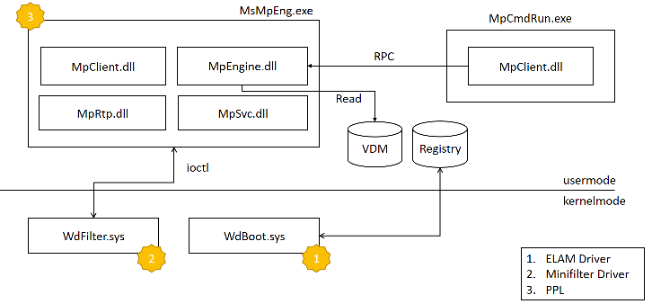
Рисунок 1.
Продукт MDA состоит из модулей, работающих как в режиме ядра, так и в пользовательском режиме. Обзор показан на рисунке 1.
Первым загружаемым компонентом является WdBoot.sys. Это драйвер ELAM, который проверяет целостность системы на ранних этапах загрузки системы.
Он загружается раньше любых других сторонних драйверов и сканирует каждый загруженный образ драйвера до вызова его DriverEntry.
Для обнаружения он использует свой собственный набор сигнатур, которые хранятся в специальном реестровом ключе (HKLM\ELAM\Microsoft Antimalware Platform\Measured), к которому нельзя получить доступ даже после выгрузки драйвера ELAM.
Основная задача службы антивируса Microsoft Defender — запустить основной исполняемый файл MDA, а именно MsMpEng.exe.
Этот процесс выполняется с защитой EPROCESS.Protection, равной AntimalwareLight (0x31), благодаря сертификации WdBoot.
MsMpEng — это относительно небольшой исполняемый файл (~300К), который загружает следующие более крупные компоненты, реализующие большую часть логики:
- MsRtp: управляет защитой в реальном времени.
- MpSvc: загружает и управляет основным компонентом MpEngine.
- MpEngine: является крупнейшим компонентом (~19 МБ). Он реализует сканеры, эмуляторы, модули, загрузку сигнатур из файла VDM и обработку сигнатур.
MpClient — это вспомогательная библиотека, реализующая ряд запросов RPC для службы (для получения конфигурации или запроса сканирования).
Наконец, есть WdFilter.sys, основной компонент архитектуры MDA в пространстве ядра. Он контролирует доступ к файловой системе, регистрируясь как драйвер минифильтра, регистрирует процедуры уведомления (загрузка образов, создание процесса, доступ к объектам и т. д.).
База данных сигнатур:
Сигнатуры MDA распределяются в четырех различных файлах .vdm:
- mpavbase.vdm: выходит с обновлениями платформы (обычно раз в месяц), содержит сигнатуры антивируса.
- mpasbase.vdm: выходит с обновлениями платформы (обычно раз в месяц), содержит сигнатуры антишпионского ПО.
- mpavdlta.vdm: выходит ежедневно, содержит только новые сигнатуры, которые объединяются в памяти с mpavbase.vdm при загрузке базы данных во время выполнения.
- mpasdlta.vdm: выходит ежедневно, содержит только новые сигнатуры, которые объединяются в памяти с mpasbase.vdm при загрузке базы данных во время выполнения.
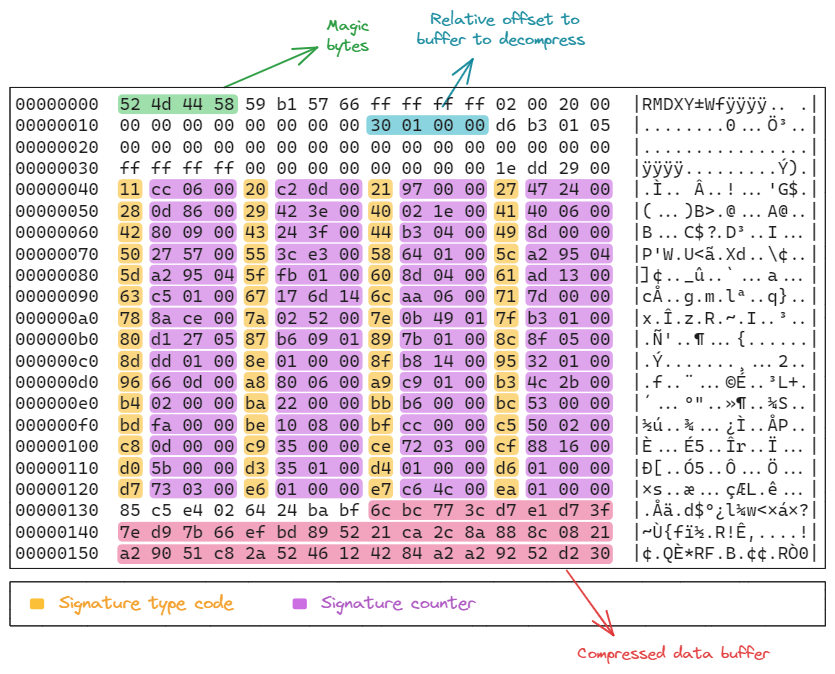
Рисунок 2
Файлы mpavbase.vdm и mpasbase.vdm являются исполняемыми файлами Portable Executable, содержащими ресурс с сжатыми сигнатурами внутри. Такой ресурс имеет глобальный заголовок, который начинается со специального значения RMDX.
На Рисунке 2 представлен глобальный заголовок. Поле uint32 с отступом 0x18 от начала ресурса содержит относительный сдвиг (0x130 на рисунке), который указывает на начало полезной нагрузки. Действительно, после 8 байт от этой точки начинается буфер сжатых данных.
На сдвиге 0x40 глобальный заголовок содержит массив DWORD. Каждый DWORD разделен на две части: старший байт (в желтом) представляет тип сигнатуры, в то время как оставшиеся три байта (в фиолетовом) представляют количество сигнатур данного типа в обратном порядке байтов.
Полезная нагрузка, начинающаяся с сдвига 0x138, сжата с использованием алгоритма gzip и может быть извлечена с помощью следующего кода на Python.
C:
import zlib
compressed = open('x.gz', 'rb').read()
decompressed = zlib.decompress(compressed, -zlib.MAX_WBITS)Анализ движка
Основная логика MDA расположена в MpEngine.dll. Движок загружается с помощью MpSvc.dll в функции MpSvc!LoadEngine, которая вызывает MpSvc!InitEngineContext.
Здесь MpEngine.dll загружается через KernelBase!LoadLibraryExW, и извлекается адрес одной из основных функций, которая позволяет службе завершить инициализацию движка: экспорт mpengine!__rsignal.
В общих чертах, функция rsignal по сути является оберткой функции mpengine!DispatchSignalOnHandle, которая вызывает функцию, соответствующую входному параметру signal_id.
Вот прототип функции:
UINT64 DispatchSignalOnHandle( PVOID g_hSignalptr, UINT64 signal_id, BYTE *pParams, SIZE_T cbParams )
Для инициализации MpEngine, MpSvc!InitEngineContext вызывает функцию rsignal следующим образом:
(pMpengineCtx->pfn__rsignal)( &pMpengineCtx->hMpEngineInstance, 0x4036, pParam, 0x1B8 );
Где параметры описаны ниже:
pMpengineCtx->hMpEngineInstance: это выходной параметр, который получает дескриптор инициализированного движка.
0x4036 — это signal_id для запроса инициализации.
pParams указывает на параметры инициализации.
cbParams — это размер pParams в байтах.
Функция MpEngine, соответствующая сигналу 0x4036, это StartMpEngine. Эта функция рекурсивно вызывает DispatchSignalOnHandle со следующими соответствующими signal_id:
0x4019: инициирует выполнение InitializeMpEngine, которая отвечает за инициализацию основной структуры данных под названием gktab.
Gktab огромен (0x15bb0 байт!) и содержит десятки полей, однако первое (и, возможно, одно из самых важных) — это указатель на функцию ksignal, которая реализует большинство функциональностей, связанных с signal_id (более 50).
0x401a: вызывает функцию ksignal и функцию dispatch для управления исключениями защитника.
0x400b: вызывает функцию ksignal для вызова функции modprobe_init, где происходит инициализация модулей.
Инициализация модулей MpEngine
MpEngine содержит множество модулей (названных AutoInitModules). Некоторые из них используются для поддержки определенных форматов файлов, таких как PE, ELF, Mach-O, и реализуют специализированные сканеры (которые регистрируются во время инициализации через функцию ScanRegister), а другие реализуют вспомогательные функции, такие как загрузчики сигнатур.
Такие модули ссылкаются на глобальный массив g_pUniModEntries. Каждая запись — это структура типа unimod_entry_t:
struct unimod_entry_t { PCHAR pModuleName; PVOID pfnInit; PVOID pfnCleanup; __int64 Unk; };
Где pModuleName — это читаемое человеком имя модуля, pfnInit — указатель на функцию инициализации, а pfnCleanup указывает на функцию очистки. Последнее поле обычно равно 0 или 1, но мы особо не обращали на это внимание.
Как описано ранее, MpSvc!InitEngineContext вызывает функцию __rsignal с несколькими signal_id, один из которых инициирует выполнение функции modprobe_init, которая будет описана в оставшейся части этого раздела.
Функция modprobe_init работает в трех основных фазах:
1)Предзагрузка баз данных сигнатур:
Эта фаза включает разбор основного заголовка и инициализацию необходимых структур данных.
Это достигается вызовом функции mpengine!preload_database.
2)Выполнение функций инициализации:
Вызываются функции инициализации всех AutoInitModules.
Это делается путем перебора всех записей в unimod_entry_t массива g_pUniModEntries и вызова функции pfnInit для каждой записи.
3)Завершение процесса загрузки сигнатур:
Заключительная фаза включает завершение процесса загрузки сигнатур.
Это делается путем вызова функции mpengine!load_database.
Подробное описание всех модулей потребовало бы огромного количества работы. Таким образом, для наших целей мы сосредоточимся только на двух из них: cksig и pefile.
Модуль cksig
Модуль cksig относится к загрузчикам сигнатур и инициализируется в рамках mpengine!cksig_init_module. На этом этапе процесса инициализации база данных ещё не загружена. Поскольку семантика каждой сигнатуры отличается от других, движок имеет отдельный загрузчик для каждого типа сигнатур. Назначенная функция считывает тело сигнатуры и загружает его в память. Модуль, желающий обработать определенный формат сигнатуры, должен зарегистрировать обратный вызов в движке.
Для поддержки этого процесса, если модуль хочет обработать определенный формат сигнатуры, он должен зарегистрировать обратный вызов в движке. Позже, когда процесс загрузки сигнатур будет завершен (Фаза 3), обратный вызов будет вызван для каждой записи, загруженной из файла VDM.
На сколько нам известно, существует две функции для регистрации обратного вызова: mpengine!RegisterForDatabaseRecords и mpengine!regcntl. Функция mpengine!RegisterForDatabaseRecords принимает на вход адрес глобальной переменной, которая получает дескриптор типа сигнатуры и обратный вызов загрузчика.
Функция regcntl принимает на вход объект hstr_handler, определенный следующим образом:
C:
struct __declspec(align(8)) hstr_handler
{
UINT64 (__stdcall *pfn_push)(UINT64, UINT16 *, UINT64, UINT64, UINT32);
UINT64 pHstrSigs;
UINT8 hstr_type;
UINT64 (__stdcall *pfn_pushend)(UINT64);
UINT64 (__stdcall *pfn_unload)(UINT64);
PVOID pHstrSigs2;
};где pfn_push — это указатель функции на обработчик сигнатуры типа hstr_type. pHstrSigs и pHstrSigs2 указывают на записи сигнатур для текущего hstr_type. pfn_pushend и pfn_unload — это две другие функции, часть обработки сигнатур, которые не охватываются этим постом.
Модуль cksig использует как RegisterForDatabaseRecords, так и regcntl для регистрации двух разных групп сигнатур. Мы сосредоточимся на последнем, поскольку он ориентирован на сигнатуры HSTR. Инициализация второй группы выполняется в подпрограмме pattsearch_init (вызываемой cksig_init_module), которая устанавливает обратные вызовы для конкретной семьи сигнатур под названием HSTR.
К этой семье относятся следующие типы сигнатур:
ID ТИП СИГНАТУРЫ
97 SIGNATURE_TYPE_PEHSTR
120 SIGNATURE_TYPE_PEHSTR_EXT
133 SIGNATURE_TYPE_PEHSTR_EXT2
140 SIGNATURE_TYPE_ELFHSTR_EXT
141 SIGNATURE_TYPE_MACHOHSTR_EXT
142 SIGNATURE_TYPE_DOSHSTR_EXT
143 SIGNATURE_TYPE_MACROHSTR_EXT
190 SIGNATURE_TYPE_DEXHSTR_EXT
191 SIGNATURE_TYPE_JAVAHSTR_EXT
197 SIGNATURE_TYPE_ARHSTR_EXT
209 SIGNATURE_TYPE_SWFHSTR_EXT
211 SIGNATURE_TYPE_AUTOITHSTR_EXT
212 SIGNATURE_TYPE_INNOHSTR_EXT
215 SIGNATURE_TYPE_CMDHSTR_EXT
228 SIGNATURE_TYPE_MDBHSTR_EXT
234 SIGNATURE_TYPE_DMGHSTR_EXT
Для установки этой новой группы обработчиков для семьи сигнатур HSTR сначала вычисляется количество записей и выделяется непрерывная область памяти размером 0x14 * hstr_total_cnt (строка 148 разобранного ниже кода показывает пример для подсемейства PEHSTR).
Рисунок 3
Функция ESTIMATED_RECORDS принимает на вход тип сигнатуры и возвращает количество сигнатур, присутствующих в VDM для этого типа сигнатуры (а именно сигнатура 0x61, 0x78 и 0x85 на рисунке).
Напомним, что информация о количестве записей по типам сигнатур хранится в глобальном заголовке VDM (перед сжатыми данными), поэтому она доступна после фазы предзагрузки.
Пример на Рисунке 3 использует функцию regcntl для регистрации обратного вызова. Обработчик для конкретного типа hstr передается на вход (hstr_push, hstr_push_ext, hstr_push_ext2 на рисунке).
Заметно, что все PEHSTR указывают на один и тот же hstr.pHstrSigs. Это не относится к другим типам сигнатур HSTR. Мы также нашли ссылки на динамические сигнатуры HSTR, которые, вероятно, связаны с Microsoft Active Protection Service (MAPS) (также известной как защита, доставляемая через облако), но мы не исследовали эту часть.
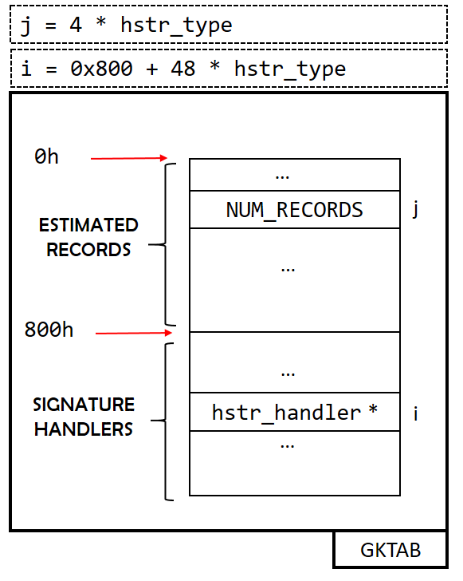
Рисунок 4
Рисунок 4 показывает, как количество записей и обработчики сигнатур хранятся в памяти в структуре данных gktab. Первая часть представляет собой массив DWORD, каждый из которых содержит количество записей для данной сигнатуры, и начиная с смещения 0x800, мы можем наблюдать второй массив, содержащий указатели на структуру hstr_handler.
Завершение процесса загрузки сигнатур
До сих пор мы говорили о фазах предзагрузки и инициализации функции modprobe_init. Чтобы система сигнатур MDA начала функционировать, необходимо завершить последний шаг. Это делается в функции mpengine!load_database, которая вызывает функцию mpengine!DispatchRecords. Здесь каждая запись VDM обрабатывается, и, в зависимости от типа сигнатуры, полезная нагрузка сигнатуры передается обработчику для этого типа сигнатуры (зарегистрированному модулем CKSIG на предыдущем этапе).
pefile_module и hstr_internal_search
Модуль pefile_module относится к типу сканеров. Действительно, одно из первых действий, вызываемых во время его инициализации, — это вызов mpengine!ScanRegister. Первый параметр — это указатель на функцию, которая реализует фактическое сканирование (pefile_scan для модуля pefile).
Каждый раз, когда запускается сканирование PE-файла, чтобы сопоставить сигнатуру с сигнатурами HSTR, вызывается hstr_internal_search. Мы заметили два разных стека вызовов: один проходит через mpengine!scan_vbuff, а другой — через mpengine!scan_vmem. Это, вероятно, связано с тем, что сканирование может быть инициировано несколько раз во время эмуляции. hstr_internal_search находит правильное смещение базы типа файла в массиве g_HstrSigs (который равен 0 для PE-файлов) и затем вызывает hstr_internal_search_worker, который реализует фактический поиск.
Статистика сигнатур
Прежде чем перейти к анализу типов сигнатур, мы приводим несколько статистических данных о различных типах сигнатур, присутствующих в файле VDM. Чтобы получить представление о распределении сигнатур, мы написали простой скрипт на Python, который анализирует VDM и подсчитывает количество сигнатур по типам.
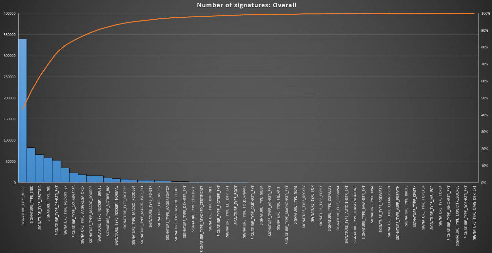
Мы заметили, что SIGNATURE_TYPE_KCRCE является наиболее часто встречающимся типом сигнатур, насчитывая более 338 тысяч сигнатур. Действительно, даже если сложить все типы сигнатур семейства HSTR, мы не достигаем и 100 тысяч сигнатур. Это значительно меньше, чем у KCRCE.
Однако, если смотреть на количество вхождений по угрозам, картина меняется значительно. Под вхождениями мы понимаем, что устанавливаем бит в единицу, если данный тип сигнатуры встречается у данной угрозы, и в ноль в противном случае. Другими словами, мы не рассматриваем фактическое количество сигнатур, а смотрим на их распределение.
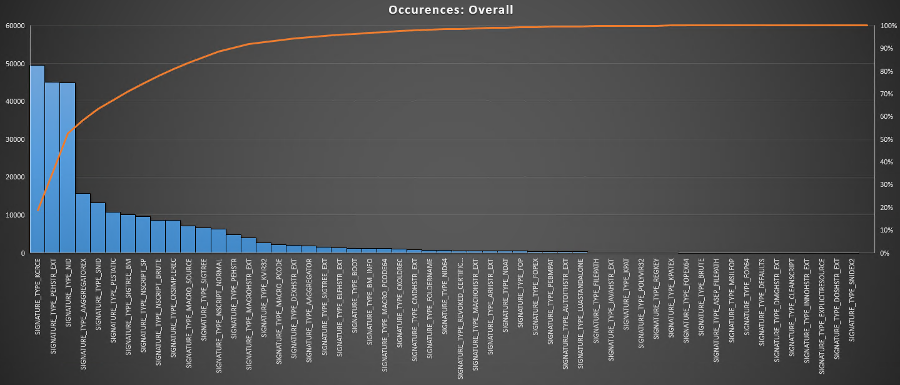
Как показывает гистограмма, PEHSTR_EXT приблизился к KCRCE. Если мы сложим вместе все сигнатуры PEHSTR_*, то получим значение, превышающее KCRCE в одиночку. Действительно, если мы посмотрим на распределение сигнатур KCRCE, заметим, что 20% угроз приходится на очень высокий процент сигнатур KCRCE. В то время как сигнатуры PEHSTR распределены гораздо более равномерно.
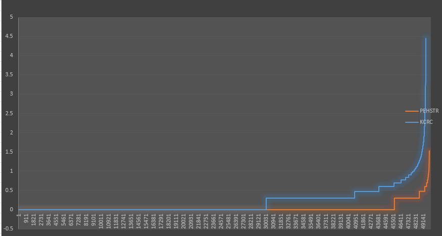
Напомним:
Сигнатуры PEHSTR_EXT и KCRCE отличаются по своему предназначению и способу использования в контексте обнаружения угроз:
- PEHSTR_EXT (Portable Executable Hash Signature Extended):
- Эти сигнатуры предназначены для идентификации вредоносного программного обеспечения в файлах PE (Portable Executable), которые являются стандартным форматом для исполняемых файлов, DLL и других файлов в Windows.
- Эти сигнатуры не используют контрольную сумму вредоносного кода.
- KCRCE (Keyed Cyclic Redundancy Check Enhanced):
- Это сигнатуры основанные на контрольной сумме вредоносного кода.
Давайте рассмотрим их поближе!
Основная структура сигнатур
Сигнатуры, содержащиеся в mpavbase.vdm и mpasbase.vdm, следуют иерархической композиционной структуре. Эта структура организует сигнатуры угроз определённым образом. Каждая угроза, представляющая определённый тип вредоносного ПО, определяется набором одной или нескольких сигнатур. Эти сигнатуры используются для идентификации и обнаружения присутствия соответствующей угрозы.Организация угроз и их соответствующих сигнатур в этих файлах определяется конкретными типами сигнатур. Начало набора сигнатур угрозы отмечается SIGNATURE_TYPE_THREAT_BEGIN, а конец набора — SIGNATURE_TYPE_THREAT_END. Эти разграничители охватывают коллекцию сигнатур, которые вместе определяют и идентифицируют конкретную угрозу.
Концептуальная структура того, как угрозы и их сигнатуры организованы в этих файлах, представлена на рисунке 5. На рисунке показано иерархическое составление, иллюстрирующее, как угрозы определяются множеством сигнатур и как эти сигнатуры сгруппированы вместе с использованием обозначенных маркеров начала и конца.
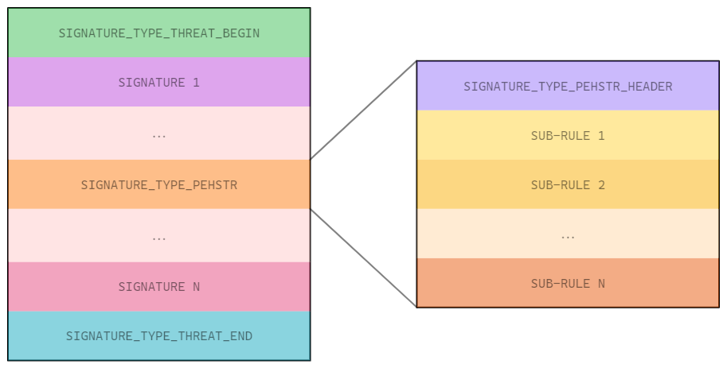
Рисунок 5
Например, на рисунке 6 показан целый набор сигнатур для угрозы с именем Plugx.C, содержащий различные сигнатуры, используемые для её обнаружения.
Между SIGNATURE_TYPE_THREAT_BEGIN и SIGNATURE_TYPE_THREAT_END находятся три разных сигнатуры, в следующем порядке:
- SIGNATURE_TYPE_STATIC: выделена зелёным цветом;
- SIGNATURE_TYPE_PEHSTR_EXT: выделена синим цветом;
- SIGNATURE_TYPE_KCRCE: выделена фиолетовым цветом.
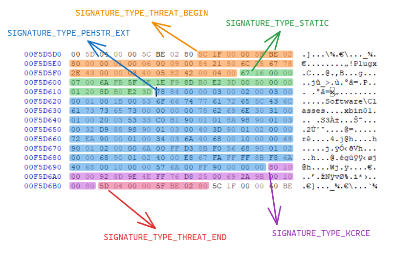
Рисунок 6
Применяя этот иерархический подход к составлению, Microsoft Defender Antivirus может эффективно управлять и поддерживать всеобъемлющую базу данных сигнатур угроз. Это позволяет эффективно обнаруживать и защищаться от широкого спектра угроз безопасности.
Сигнатуры Windows Defender следуют общей структуре, определённой как:
Код:
typedef struct _STRUCT_COMMON_SIGNATURE_TYPE {
UINT8 ui8SignatureType;
UINT8 ui8SizeLow;
UINT16 ui16SizeHigh;
BYTE pbRuleContent[];
} STRUCT_COMMON_SIGNATURE_TYPE, *PSTRUCT_COMMON_SIGNATURE_TYPE;В этой структуре:
- ui8SignatureType указывает тип сигнатуры.
- ui8SizeLow указывает младший байт размера сигнатуры.
- ui16SizeHigh представляет старший байт размера сигнатуры.
- pbRuleContent[] содержит содержимое правила, общий размер которого рассчитывается как: ui8SizeLow | (ui16SizeHigh << 8).
SIGNATURE_TYPE_THREAT_BEGIN и THREAT_END
Угроза в данном контексте представлена как последовательность различных типов сигнатур, используемых для её обнаружения. Эти сигнатуры находятся между двумя вышеупомянутыми типами.Сигнатуры SIGNATURE_TYPE_THREAT_BEGIN и SIGNATURE_TYPE_THREAT_END не являются простыми маркерами, но содержат различную информацию.
SIGNATURE_TYPE_THREAT_BEGIN имеет следующую структуру:
Код:
typedef struct _STRUCT_SIG_TYPE_THREAT_BEGIN {
UINT8 ui8SignatureType;
UINT8 ui8SizeLow;
UINT16 ui16SizeHigh;
UINT32 ui32SignatureId;
BYTE unknownBytes1[6];
UINT8 ui8SizeThreatName;
BYTE unknownBytes2[2];
CHAR lpszThreatName[ui8SizeThreatName];
BYTE unknownBytes3[9];
} STRUCT_SIG_TYPE_THREAT_BEGIN, *PSTRUCT_SIG_TYPE_THREAT_BEGIN;где:
- ui8SignatureType: шестнадцатеричный код, определяющий тип сигнатуры (0x05C).
- ui8SizeLow: младшая часть размера всей сигнатуры.
- ui16SizeHigh: старшая часть размера всей сигнатуры.
- ui32SignatureId: идентификатор сигнатуры, используемый mpengine.dll.
- unknownBytes1: шесть неизвестных байт.
- ui8SizeThreatName: представляет размер имени угрозы в байтах.
- unknownBytes2: два неизвестных байта.
- lpszThreatName: строка, представляющая имя угрозы.
- unknownBytes3: девять неизвестных байт.
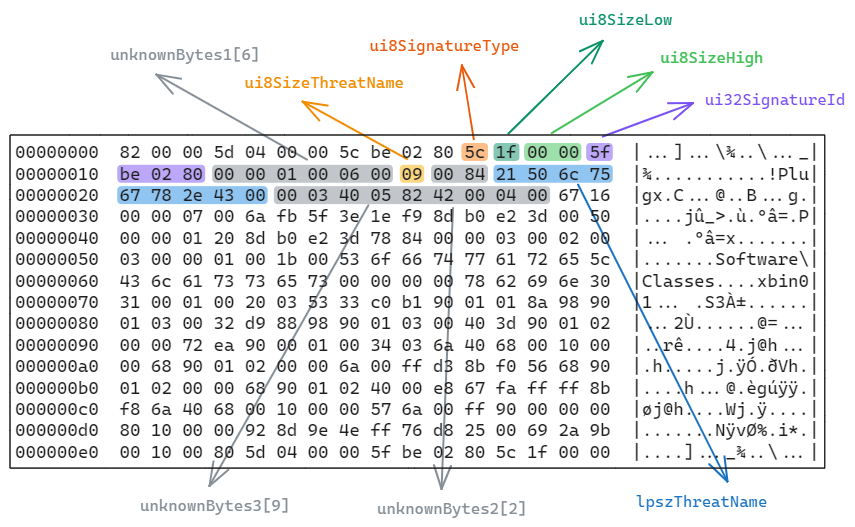
Рисунок 7
STRUCT_SIG_TYPE_THREAT_END имеет общий формат сигнатуры:
Код:
typedef struct _STRUCT_SIG_TYPE_THREAT_END {
UINT8 ui8SignatureType;
UINT8 ui8SizeLow;
UINT16 ui16SizeHigh;
BYTE pbRuleContent[];
} STRUCT_SIG_TYPE_THREAT_END,* PSTRUCT_SIG_TYPE_THREAT_END;где ui8SignatureType имеет значение 0x5D, а значение pbRuleContent такое же, как соответствующий ui32SignatureId, используемый в SIGNATURE_TYPE_THREAT_BEGIN.
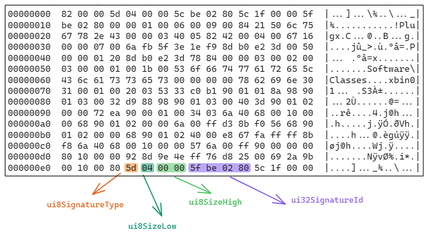
Рисунок 8
SIGNATURE_TYPE_PEHSTR против SIGNATURE_TYPE_PEHSTR_EXT
SIGNATURE_TYPE_PEHSTR и SIGNATURE_TYPE_PEHSTR_EXT используются для обнаружения вредоносных Portable Executable (PE) файлов, где обнаружение основывается исключительно на совпадении байтов и строк.Оба этих типа сигнатур состоят из:
- Заголовка
- Одного или нескольких подправил
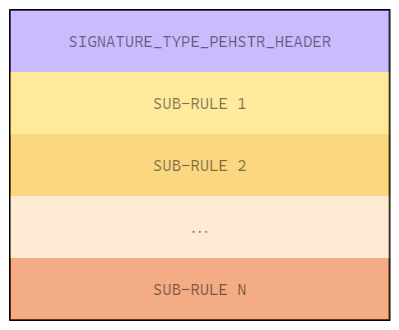
Рисунок 9
Реализация механизма для SIGNATURE_TYPE_PEHSTR и SIGNATURE_TYPE_PEHSTR_EXT
Для реализации этого механизма, обе сигнатуры, SIGNATURE_TYPE_PEHSTR и SIGNATURE_TYPE_PEHSTR_EXT, используют общую структуру заголовка:
Код:
typedef struct _STRUCT_PEHSTR_HEADER {
UINT16 ui16Unknown;
UINT8 ui8ThresholdRequiredLow;
UINT8 ui8ThresholdRequiredHigh;
UINT8 ui8SubRulesNumberLow;
UINT8 ui8SubRulesNumberHigh;
BYTE bEmpty;
BYTE pbRuleData[];
} STRUCT_PEHSTR_HEADER, *PSTRUCT_PEHSTR_HEADER;где:
- ui16Unknown: назначение этого поля неизвестно.
- ui8ThresholdRequiredLow: младшая часть порога, необходимого для срабатывания обнаружения.
- ui8ThresholdRequiredHigh: старшая часть порога, необходимого для срабатывания обнаружения.
- ui8SubRulesNumberLow: младшая часть количества подправил, составляющих эту сигнатуру.
- ui8SubRulesNumberHigh: старшая часть количества подправил, составляющих эту сигнатуру.
- pbRuleData[]: содержит все подправила, используемые для обнаружения.
Код:
typedef struct _STRUCT_RULE_PEHSTR_EXT {
UINT8 ui8SubRuleWeightLow;
UINT8 ui8SubRuleWeightHigh;
UINT8 ui8SubRuleSize;
UINT8 ui8CodeUnknown;
BYTE pbSubRuleBytesToMatch[];
} STRUCT_RULE_PEHSTR_EXT, *PSTRUCT_RULE_PEHSTR_EXT;где:
- ui8SubRuleWeightLow: младшая часть веса подправила в процессе обнаружения.
- ui8SubRuleWeightHigh: старшая часть веса подправила в процессе обнаружения.
- ui8SubRuleSize: указывает размер строки байтов, с которой нужно сопоставить данный PE.
- pbSubRuleBytesToMatch[]: байты, которые должны быть найдены для срабатывания обнаружения.
Кроме того, SIGNATURE_TYPE_PEHSTR может содержать подправила с читаемыми строками, в то время как SIGNATURE_TYPE_PEHSTR_EXT может содержать последовательности байтов.
Следующее изображение показывает пример SIGNATURE_TYPE_PEHSTR:
Рисунок 10
Чтобы сработало обнаружение Darby.A, необходимо достичь порога как минимум 0x33. Первые пять подправил имеют вес (зелёное поле на рисунке) 0x0A, а последние четыре подправила имеют вес 0x01.
Любой PE-файл, содержащий байты из первых пяти подправил (все с весом 0x0A) и по крайней мере одно из последних четырёх подправил (с весом 0x01), достигнет порога 0x33 и будет обнаружен.
С помощью инструмента MpCmdRun.exe обнаружение можно проверить:
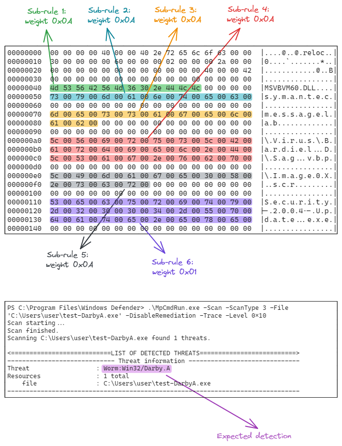
Рисунок 11
Если хотя бы один байт из подправила отсутствует в PE, обнаружение не произойдёт. На следующем изображении изменённый байт выделен синим цветом:
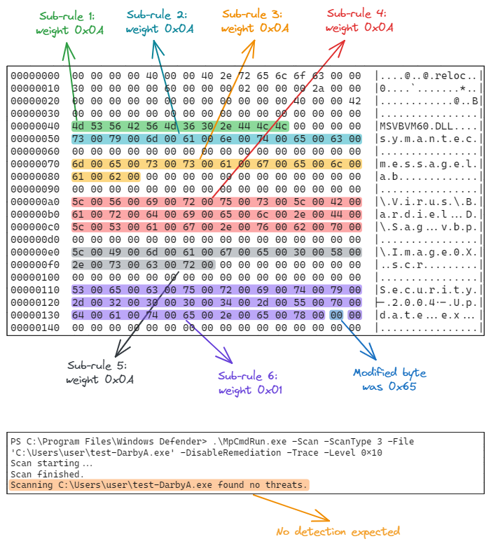
Рисунок 12
Однако важно отметить, что такие правила, основанные исключительно на совпадении байтов и строк, относительно легко обойти. По этой причине было введено множество подстановочных символов, чтобы сделать правила более надёжными и гибкими.
Шаблоны для реализации подстановочных символов
Все правила подстановки начинаются с байта 0x90, за которым следует второй байт, идентифицирующий его "тип", и затем другие байты, которые его определяют. Шаблоны от 90 01 до 90 20 используются для реализации подстановочных символов в рамках алгоритма разбора SIGNATURE_TYPE_PEHSTR_EXT.Следующие шаблоны будут объяснены в следующих разделах:
- 90 01 XX
- 90 02 XX
- 90 03 XX YY
- 90 04 XX YY
- 90 05 XX YY
Шаблон 90 01 XX
Шаблон 90 01 XX используется для совпадения с последовательностью байтов определённой длины, заданной количеством XX.На следующем рисунке показаны подправила, связанные с сигнатурой Plugx.A:
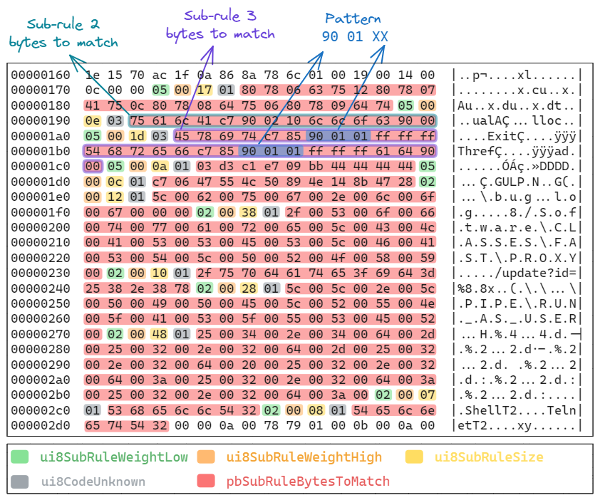
Рисунок 13
Существует две последовательности шаблона 90 01 01, выделенные синим цветом в рамках одного и того же подправила. В обоих случаях ожидается ровно один байт любого значения.
Пример обнаружения для правила, показанного на Рисунке 14.
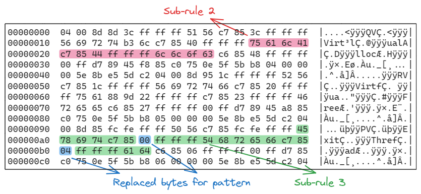
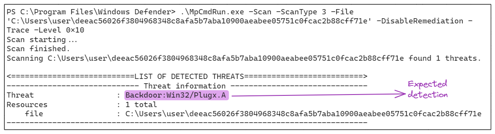
Рисунок 14
Представление подправила в Yara можно записать следующим образом:
Код:
rule Pattern_90_01_example
{
strings:
$sub_rule_3_hex = { 45 78 69 74 C7 85 ?? FF FF FF 54 68 72 65 66 C7 85 ?? 04 FF FF FF 61 64 }
condition:
$sub_rule_3_hex
}Шаблон 90 02 XX
Шаблон 90 02 XX используется в качестве заполнителя, чтобы соответствовать до XX байтов в определённой позиции.Как и в случае с шаблоном 90 01 XX, пример шаблона 90 02 XX из подправила, найденного в угрозе Plugx.A, показан на Рисунке 15: Шаблон, обозначенный как 90 02 10, соответствует до 16 байтов в этой позиции.
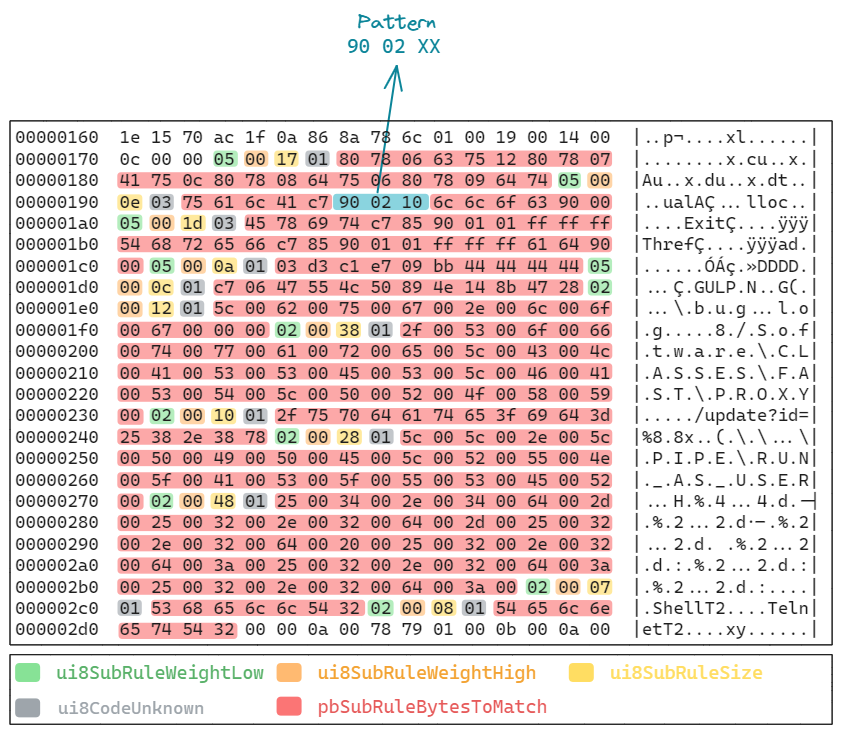
Рисунок 15
Представление подправила в Yara можно записать следующим образом:
Код:
rule Pattern_90_02_example
{
strings:
$sub_rule_2_hex = { 75 61 6C 41 C7 [0-16] 6C 6C 6F 63 }
condition:
$sub_rule_2_hex
}Шаблон 90 03 XX YY
Шаблон 90 03 XX YY сопровождается двумя последовательными последовательностями байтов, длины которых определены значениями XX и YY. Ожидаемые байты должны соответствовать одной из двух последовательностей. Пример показан на Рисунке 17:
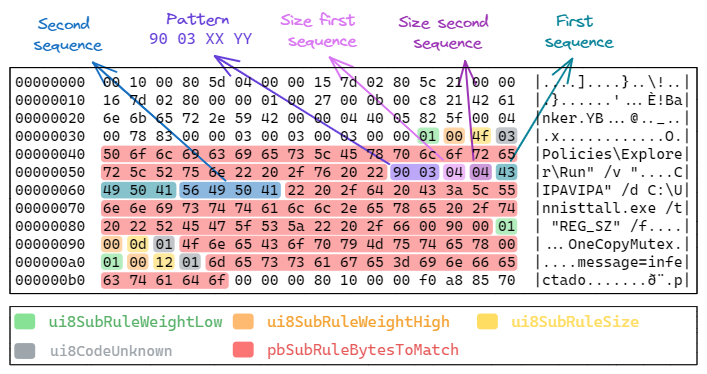
Рисунок 16
На рисунке 16 пример относится к угрозе Banker.YB, где шаблон позволяет выбрать одну из двух строк, "CIPA" или "VIPA".
Шаблон 90 03 XX YY также может работать с общими последовательностями байтов, как показано на рисунке 17:
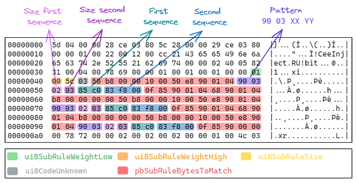
Рисунок 17
Этот шаблон можно описать с помощью следующего правила Yara:
Код:
rule Pattern_90_03_example
{
strings:
$sub_rule_1_hex = { 50 6f 6c 69 63 69 65 73 5c 45 78 70 6c 6f 72 65 72 5c 52 75 6e 22 20 2f 76 20 22 (43 49 50 41|56 49 50 41) 22 20 2f 64 20 43 3a 5c 55 6e 6e 69 73 74 74 61 6c 6c 2e 65 78 65 20 2f 74 20 22 52 45 47 5f 53 5a 22 20 2f 66 00 90 00 }
condition:
$sub_rule_1_hex
}Следующая часть PE вызовет обнаружение Banker.YB:
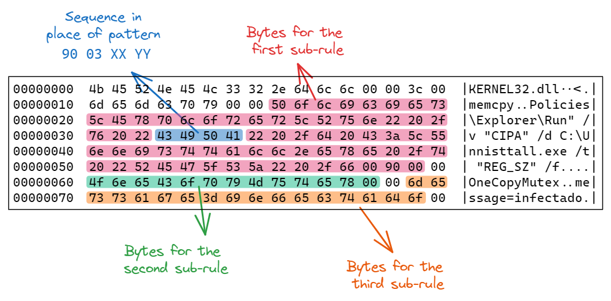
Рисунок 18
Шаблон 90 04 XX YY
Шаблон 90 04 XX YY является заполнителем для выражения, похожего на регулярное выражение, где XX представляет точное количество байтов, которые должны быть найдены, а YY представляет длину шаблона, похожего на регулярное выражение. Пример этого шаблона можно найти на Рисунке 19:
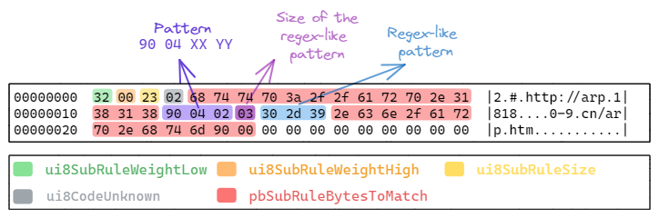
Рисунок 19
Более сложные шаблоны могут содержать точные символы для совпадения:
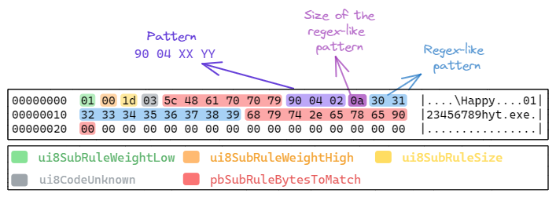
Рисунок 20
На Рисунке 19 и Рисунке 20 шаблон выделен фиолетовым цветом, размер шаблона, похожего на регулярное выражение, выделен виноградным цветом, а байты, подобные регулярному выражению, выделены синим цветом.
Эти шаблоны можно представить как правила Yara:
Код:
rule Pattern_90_04_example
{
strings:
$example_90_04_first_rule = { 68 74 74 70 3a 2f 2f 61 72 70 2e 31 38 31 38 [30-39] [30-39] 2e 63 6e 2f 61 72 70 2e 68 74 6d 90 00 }
$example_90_04_second_rule = { 5c 48 61 70 70 79 [30-39] [30-39] 68 79 74 2e 65 78 65 90 00 }
condition:
$example_90_04_first_rule and $example_90_04_second_rule
}Шаблон 90 05 XX YY
Шаблон 90 05 XX YY является еще одним заполнителем для выражения, похожего на регулярное выражение, где XX представляет верхнюю границу количества байтов, которые должны быть найдены, а YY представляет длину шаблона, похожего на регулярное выражение. Основное отличие от 90 04 XX YY заключается в том, что 90 05 XX YY нечувствителен к регистру при работе с шаблонами, такими как 90 05 XX 03 61 2D 7A.Пример шаблона 90 05 XX YY показан на Рисунке 21:
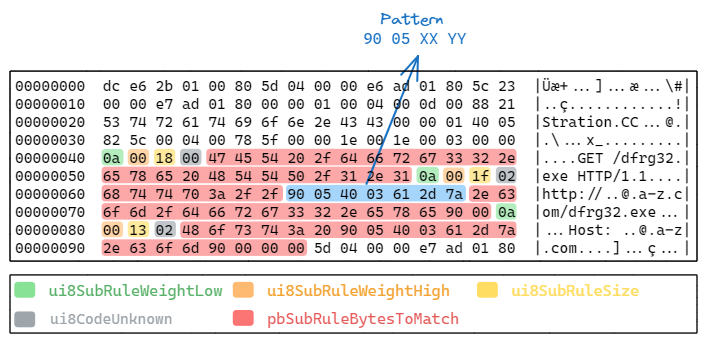
Рисунок 21
На Рисунке 21 шаблон выделен синим цветом в рамках сигнатуры SIGNATURE_TYPE_PEHSTR_EXT для угрозы Stration.CC.
Рисунок 22 показывает PE-файл, содержащий байты, необходимые для срабатывания обнаружения:
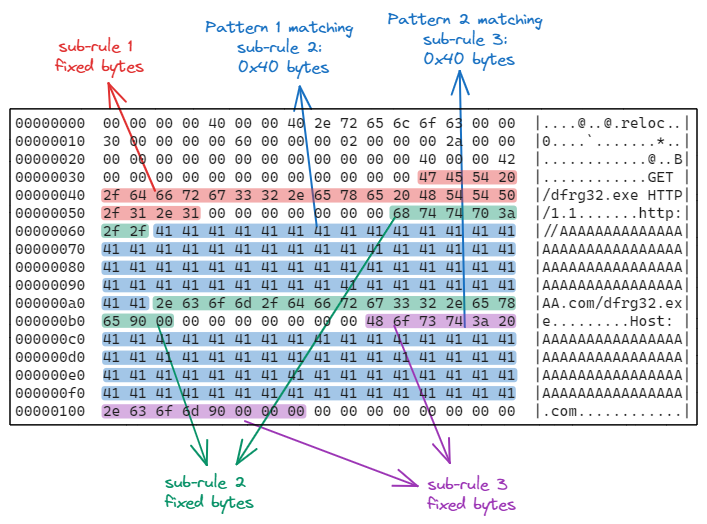
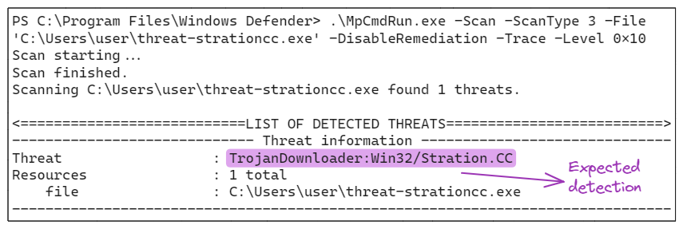
Рисунок 22
Как видно на рисунке 22, ожидаемый шаблон для обнаружения правильно воспроизводится с прописными буквами от 41 до 5A.
Эквивалентное правило Yara для этого шаблона можно определить следующим образом:
Код:
rule Pattern_90_05_example
{
strings:
$example_90_05 = "http://[a-zA-Z]{0,64}\\.com/dfrg32\\.exe"
condition:
$example_90_05
}Несмотря на включение подстановочных символов и сложных шаблонов для повышения гибкости и надёжности, правила, основанные исключительно на совпадении байтов и строк, относительно легко обойти.
Подстановочные символы были введены для решения этой проблемы, позволяя вариации в последовательностях байтов, с которыми сопоставляются правила. Однако эти правила всё равно могут быть обойдены мотивированными злоумышленниками, которые используют техники для модификации или маскировки шаблонов байтов таким образом, чтобы избежать обнаружения.
Поэтому, хотя шаблоны с подстановочными символами улучшают надёжность обнаружения на основе сигнатур, они не являются непробиваемым решением против всех методов обхода.
Заключение
В этом анализе мы исследовали, как MDA управляет своими сигнатурами, с акцентом на PEHSTR и PEHSTR_EXT.Обладая этими знаниями, в контексте эмуляции действий противника, мы теперь можем создать артефакт, который вызовет определенное обнаружение, или можем переиспользовать обнаруженный артефакт для обхода конкретной сигнатуры.
Конечно, адекватная эмуляция выходит за рамки обнаружения по шаблону, но тем не менее это интересное кейс-исследование, демонстрирующее важность понимания внутренней работы решений по безопасности.